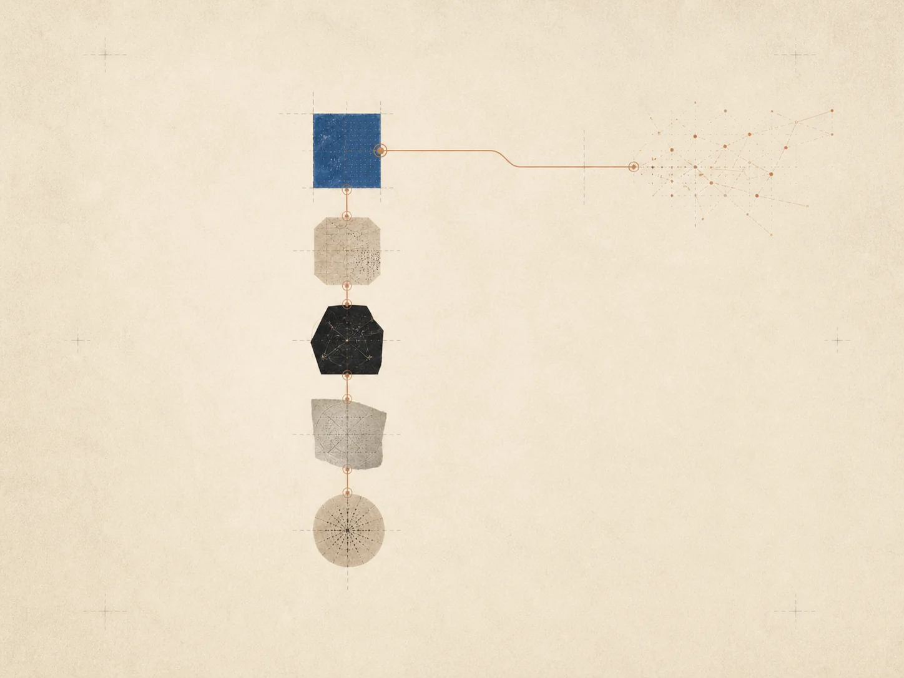

Introducing guided recall.
A new way to return to questions worth keeping open, with enough pause for your own first attempt.

2026
A new way to return to questions worth keeping open, with enough pause for your own first attempt.
New field research on prompts that make a concept available without flattening its context.
A smaller set of practical paths for beginning a topic, testing an explanation, and building a knowledge map.
Topics, questions, and the useful links between them now stay visible as you work.
The five ongoing research threads—memory, explanation, practice, knowledge mapping, and tutoring—now live on a single research page.
Connect Anthropic, OpenAI, or compatible providers from the API Keys page and use them inside any session.
The Studio guide is now a longer essay with worked examples from real subjects.
Maps now keep a record of when a node was last visited, so you can see what is fresh and what needs a return.
A small study on the parts of a conversation that people actually revisit a week later.
The default interface now steps out of the way as a conversation deepens, instead of asking for the next turn.
The privacy notice is now written to be readable. Every data category, every destination, every retention rule.
Exam mode asks first, then explains. The first version is rolling out to Descartes and Euclid plans.
No news matched that search.
See more